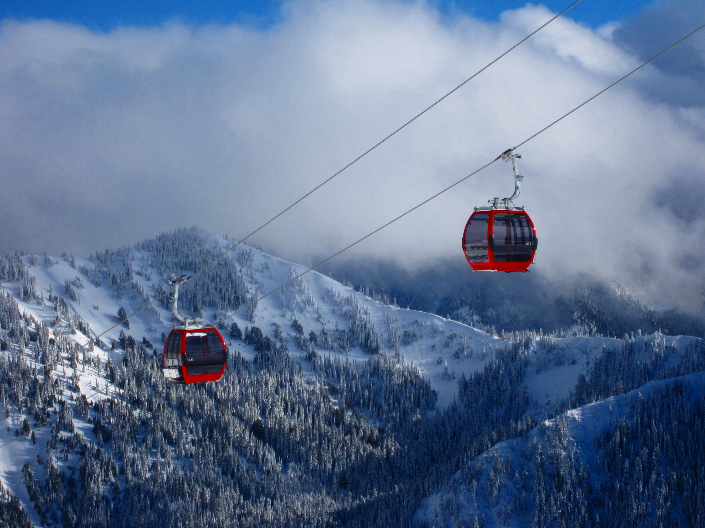

| Home | Choosing a Mountain | How Does it All Work? | Getting Gear | Tips and Advice |
|---|

This section is going to go over how the mountain works, what lifts and gondolas are, how tickets work, just general mountain stuff you should know.Lifts and gondolas are how you actually get to the top of the mountain. Lifts are benches attached to a lift line that you share with either one or three other people. To get on, you just stand in front of it while it's moving and it scoops you up. You keep your board attached to one foot the entire time, so it's just hanging while you're moving up. Gondolas are what takes you to the top of very high mountains in extreme weather conditions. They're small rooms that move up the line that can seat six to twelve people. You take off your board and store it on the outside. It's a good idea to take your mask off in here because the ride is gonna take a while.
To get on the mountain and up the trails, you'll need a ticket. You buy the ticket online or at the booth. Depending on the level of sophistication of the ticket system the mountain uses, the ticket could be a lot of different things. Most lower end mountains will just print you out a piece of paper to attach to your jacket that the lift operators will check for before they let you up. Much nicer mountains like Vail in Colorado, Whistler in Canada and Stowe in Vermont will give you a keycard that will be scanned while you walk towards the lift. No keycard, no ride. Most tickets involve a whole day pass, meaning your ticket grants you mountain access all day until the mountian closes. Others involve deadlines, meaning you can only be on the mountain before or after a certain time. Still others use an hour limit, meaning you pay for a specific amount of hours on the mountain and then have to leave when they're up.
Ski patrol is a group of mountain employees, usually dressed in red, who ski around the mountain looking for people who need help. If someone's hurt and can't get down the mountain, they'll radio in a snowmobile or even a helicopter if the situation is bad enough. If you're hurt or need help, take your board off and stick it upright into the snow. If you have skis or a buddy has skis, stick the skis into the snow in an x formation. People will realize and come to help.
Now that you know how the mountain works, it's time to look into some gear.